Ce rapport compare quatre chaînes de déploiement d'un même modèle ResNet-18 sur deux architectures : deux pipelines CPU (ONNX → OpenVINO ; TorchScript/torch.compile) et deux pipelines GPU (ONNX → TensorRT ; TorchScript/torch.compile). Le protocole est strictement identique : 50 images CIFAR-10 de test, prétraitement ImageNet, batch de 10, 5 warmups et 5 répétitions indépendantes. Les mesures couvrent le débit, la latence, la Top-1, l'accord des prédictions, l'énergie CPU (RAPL) et l'énergie GPU (NVML).
Qualité préservée. La Top-1 est identique à 94.0 % pour tous les pipelines, ce qui montre que les optimisations de déploiement ne dégradent pas la qualité des décisions. L'accord des prédictions avec la référence du même device est de 100.0 % pour tous les pipelines : les optimisations ne changent aucune décision sur les 50 images.
Stabilité. Le coefficient de variation du débit (σ/moyenne) reste modéré : de 0.31 % (torch.compile (GPU)) à 6.68 % (torch.compile (CPU)). Les mesures sont globalement stables et reproductibles ; les variations les plus fortes s'expliquent par la charge de fond de la station et par les temps de compilation/cache. Les répétitions individuelles sont détaillées en annexe ; les barres d'erreur des figures correspondent à l'écart-type des 5 exécutions indépendantes.
Énergie. Côté CPU, l'énergie RAPL du package varie de 0.35 à 0.51 J/image selon le pipeline, soit environ 17.3 à 25.7 J pour les 50 images. Ces valeurs incluent tout le package CPU (et donc une partie du système), pas uniquement le modèle : elles servent à comparer les pipelines entre eux, pas à une facture électrique exacte. Côté GPU, l'énergie varie de 0.02 à 0.07 J/image, soit 0.8 à 3.6 J pour les 50 images. Elle est mesurée par intégration de la puissance NVML power.draw sur 3 séries de 20 passes : le compteur d'énergie total, trop grossier pour des runs de quelques dizaines de millisecondes, renvoyait parfois 0. La puissance au repos mesurée est d'environ 31.3 W ; l'énergie totale inclut cette composante. Le GPU est plus rapide mais sa puissance instantanée est beaucoup plus élevée ; le rapport énergie/temps est donc le bon indicateur pour arbitrer entre latence et coût énergétique.
L'objectif du TP est de comprendre comment un modèle PyTorch passe du monde de l'entraînement à celui de l'inférence, et comment chaque couche logicielle (format intermédiaire, runtime, compilateur, kernels) influence les performances. Quatre pipelines sont étudiés, à modèle et données identiques :
La question centrale n'est pas seulement « quel pipeline est le plus rapide ? », mais aussi « à quel coût énergétique, avec quelle stabilité, et sans dégrader la qualité des prédictions ? ». C'est pourquoi chaque pipeline est mesuré plusieurs fois et comparé à une référence PyTorch eager exécutée sur le même matériel.
Une chaîne de déploiement peut se lire de haut en bas :
Les deux pipelines CPU illustrent deux philosophies : un runtime externe spécialisé (OpenVINO) contre la compilation intégrée à PyTorch (TorchScript/Inductor). Les deux pipelines GPU opposent de même un runtime externe (TensorRT) à la compilation native (torch.compile/Triton).
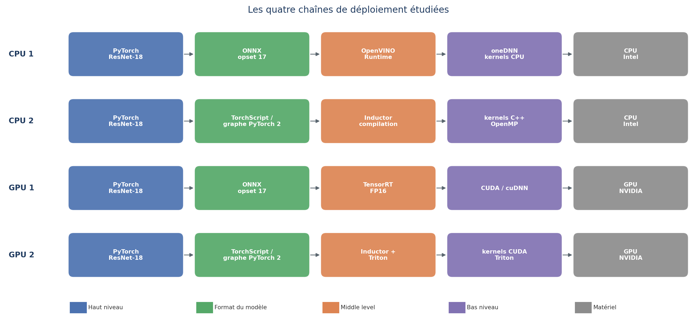
Le modèle imposé est ResNet-18 pré-entraîné sur ImageNet. Or ImageNet contient 1000 classes et CIFAR-10 en contient 10 : utiliser directement la couche de sortie 1000 classes ne permet pas de calculer une Top-1 sur les 10 classes CIFAR. Pour rester fidèle à l'esprit du TP (même modèle pré-entraîné, mêmes poids pour tous les pipelines) tout en obtenant une métrique significative, nous avons adopté un linear probe :
fc est remplacée par une couche linéaire 512 → 10 ;artifacts/classifier_head.npz
et rechargés à l'identique par les quatre pipelines.Cette adaptation est explicitement documentée : elle ne remet pas en cause la comparaison des pipelines, puisque tous utilisent exactement le même graphe et les mêmes poids. Les optimisations de déploiement sont donc le seul facteur qui varie.
Accuracy obtenue sur le test complet CIFAR-10 (10 000 images) : 86.9 % ; sur les 50 images du TP : 94.0 %. La faible taille de l'échantillon (50 images) explique qu'un ou deux exemples changent sensiblement le pourcentage.
Le sous-ensemble est constitué de 5 images de test par classe, sélectionnées avec la seed 42, soit 50 images. Chaque image 32×32 est redimensionnée en 224×224 (interpolation bilinéaire avec antialiasing), convertie en float32, puis normalisée avec les moyennes et écarts-types ImageNet. Le prétraitement est identique pour les quatre pipelines et il est effectué avant la boucle chronométrée : on mesure l'inférence, pas le décodage JPEG ni le redimensionnement.
| Classe | Nom | Images dans le sous-ensemble |
|---|---|---|
| 0 | airplane | 5 |
| 1 | automobile | 5 |
| 2 | bird | 5 |
| 3 | cat | 5 |
| 4 | deer | 5 |
| 5 | dog | 5 |
| 6 | frog | 5 |
| 7 | horse | 5 |
| 8 | ship | 5 |
| 9 | truck | 5 |
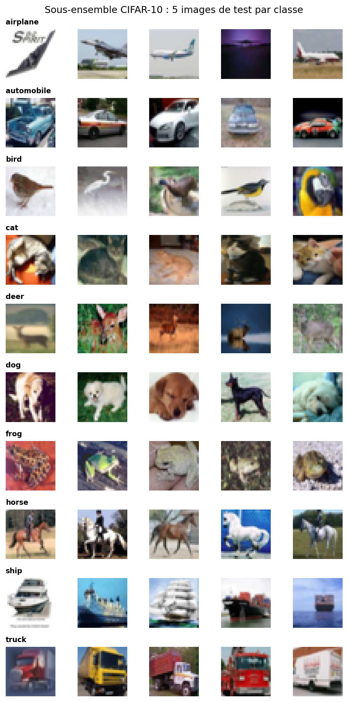
package-0 (µJ → J), via un démon lancé par
l'entrypoint Docker. Il s'agit de l'énergie du package CPU, pas seulement du modèle.nvmlDeviceGetTotalEnergyConsumption lorsque
disponible, sinon échantillonnage de la puissance instantanée.| Paramètre | Valeur |
|---|---|
| Modèle | ResNet-18 (torchvision, poids IMAGENET1K_V1) + tête linéaire 10 classes |
| Adaptation | linear probe (backbone gelé) sur CIFAR-10 |
| Données | CIFAR-10, sous-ensemble de 50 images de test (5 par classe) |
| Prétraitement | 32×32 → 224×224 (bilinéaire antialias), normalisation ImageNet |
| Classes | airplane, automobile, bird, cat, deer, dog, frog, horse, ship, truck |
| Batch | 10 images (5 batchs pour 50 images) |
| Répétitions | 5 exécutions indépendantes + 5 warmups |
| Seed | 42 |
| CPU | Intel(R) Core(TM) i5-10200H CPU @ 2.40GHz (8 threads logiques, 4 utilisés) |
| GPU | NVIDIA GeForce RTX 3050 Laptop GPU |
| CUDA / cuDNN | 12.4 / 90100 |
| PyTorch / torchvision | 2.5.1+cu124 / 0.20.1+cu124 |
| ONNX / ONNX Runtime | 1.17.0 / 1.20.2 |
| OpenVINO / TensorRT | 2025.1.0-18503-6fec06580ab-releases/2025/1 / 10.7.0.post1 |
| Système | Linux-7.2.11-arch1-1-x86_64-with-glibc2.35 |
Le modèle est exporté en ONNX (opset 17, batch fixe 10) avec torch.onnx.export.
ONNX Runtime CPU sert de contrôle, puis OpenVINO convertit le même fichier ONNX et
compile pour le CPU avec PERFORMANCE_HINT=THROUGHPUT et 4 threads.
OpenVINO applique ses fusions et sélectionne des kernels oneDNN.
python -m src.prepare docker compose run --rm tp jupyter nbconvert --to notebook --execute --inplace \ notebooks/01_cpu_onnx_openvino.ipynb
Deux variantes natives sont mesurées. TorchScript trace le modèle, le gèle et
applique optimize_for_inference. torch.compile capture le graphe,
le compile avec Inductor et génère des kernels C++/OpenMP. Les warmups absorbent
le coût de compilation ; on mesure le régime établi.
docker compose run --rm tp jupyter nbconvert --to notebook --execute --inplace \ notebooks/02_cpu_torchscript_compile.ipynb
Le même fichier ONNX est chargé par ONNX Runtime avec l'Execution Provider TensorRT (FP16, cache de moteur, workspace 1 Go). ONNX Runtime CUDA sert de contrôle pour isoler l'apport de TensorRT. Le premier appel construit le moteur ; les warmups absorbent cette étape.
docker compose run --rm tp jupyter nbconvert --to notebook --execute --inplace \ notebooks/03_gpu_onnx_tensorrt.ipynb
TorchScript CUDA sert de contrôle, puis torch.compile compile le modèle
avec Inductor et génère des kernels Triton pour le GPU. La comparaison avec
TensorRT met en évidence deux approches : runtime externe spécialisé contre
compilation intégrée à l'écosystème PyTorch.
docker compose run --rm tp jupyter nbconvert --to notebook --execute --inplace \ notebooks/04_gpu_torch_compile.ipynb
| Pipeline | Device | Débit (img/s) moy ± σ | Latence (ms/img) moy ± σ | Top-1 | Gain vs eager |
|---|---|---|---|---|---|
| ONNX → OpenVINO (CPU) | CPU | 32.82 ± 0.18 | 30.474 ± 0.168 | 94.0 % | ×0.73 |
| torch.compile (CPU) | CPU | 48.87 ± 3.27 | 20.538 ± 1.418 | 94.0 % | ×1.08 |
| ONNX → TensorRT (GPU) | CUDA | 2182.71 ± 45.36 | 0.458 ± 0.009 | 94.0 % | ×2.69 |
| torch.compile (GPU) | CUDA | 911.54 ± 2.86 | 1.097 ± 0.003 | 94.0 % | ×1.12 |
Sur CPU, PyTorch eager traite 45.18 img/s (22.196 ms/image). OpenVINO atteint 32.82 img/s, soit ×0.73 et une latence de 30.474 ms/image. Le contrôle ONNX Runtime CPU se situe à 64.49 img/s ; comparer les deux runtimes permet d'isoler l'effet des optimisations propres à OpenVINO. `torch.compile` (Inductor) atteint 48.87 img/s (×1.08 vs eager). TorchScript, plus conservateur, atteint 56.31 img/s (×1.25).
Sur GPU, PyTorch eager atteint 810.71 img/s (1.233 ms/image). TensorRT (FP16) atteint 2182.71 img/s, soit ×2.69, avec une latence de 0.458 ms/image. ONNX Runtime CUDA sert de contrôle (800.10 img/s) : l'écart avec TensorRT provient de la fusion d'opérateurs et des kernels spécialisés, pas du simple passage sur GPU. `torch.compile` (Inductor/Triton) atteint 911.54 img/s (×1.12 vs eager). TorchScript CUDA reste à 934.97 img/s (×1.15).
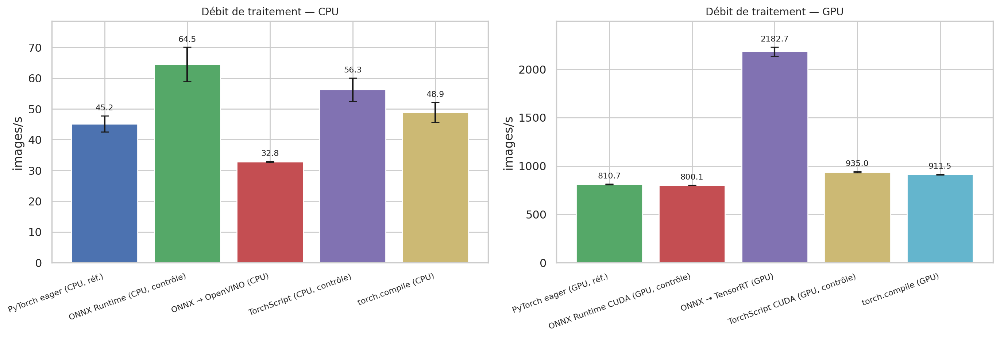
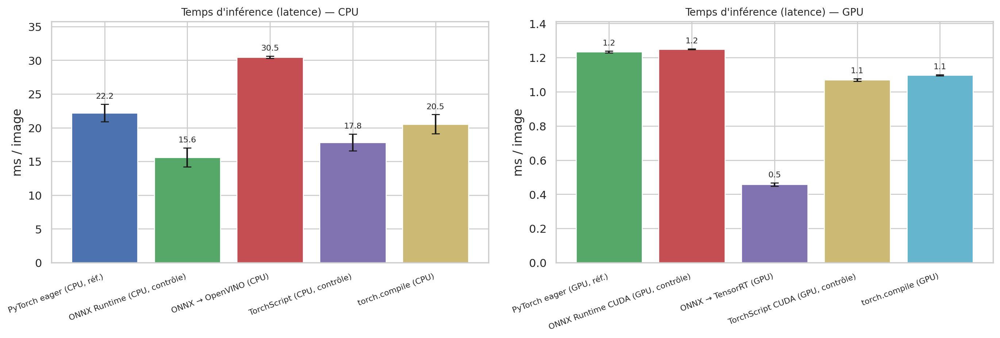
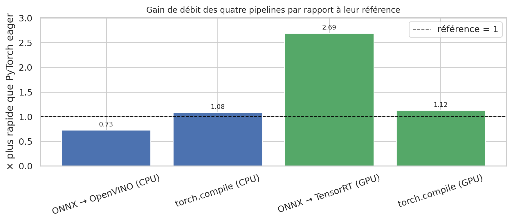
La Top-1 est identique à 94.0 % pour tous les pipelines, ce qui montre que les optimisations de déploiement ne dégradent pas la qualité des décisions. L'accord des prédictions avec la référence du même device est de 100.0 % pour tous les pipelines : les optimisations ne changent aucune décision sur les 50 images.
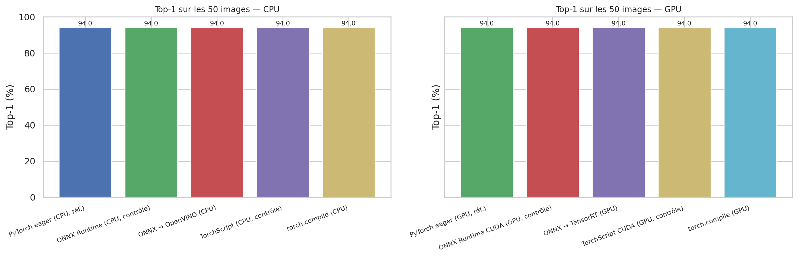
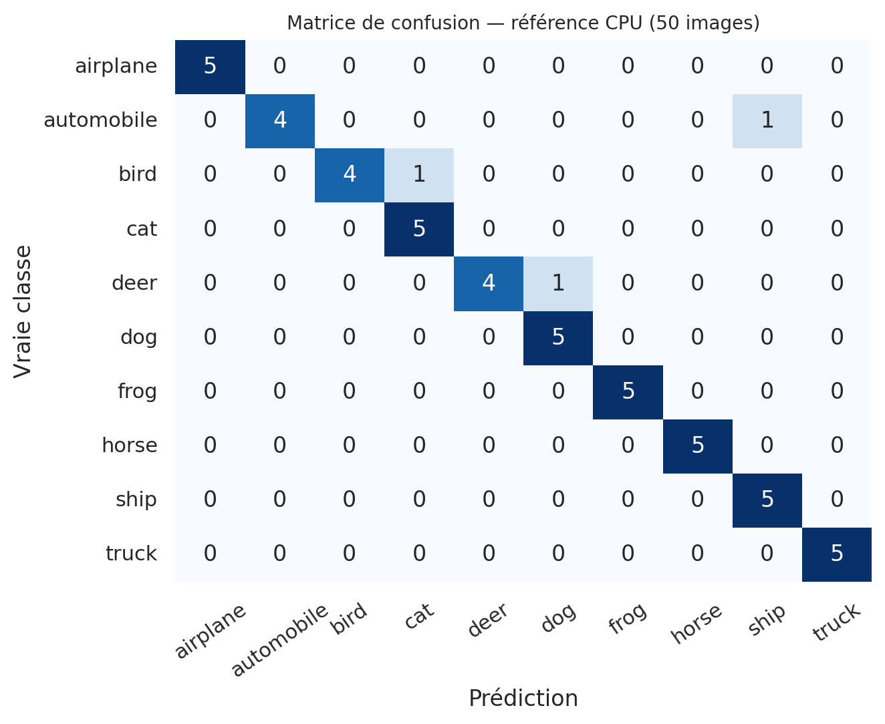
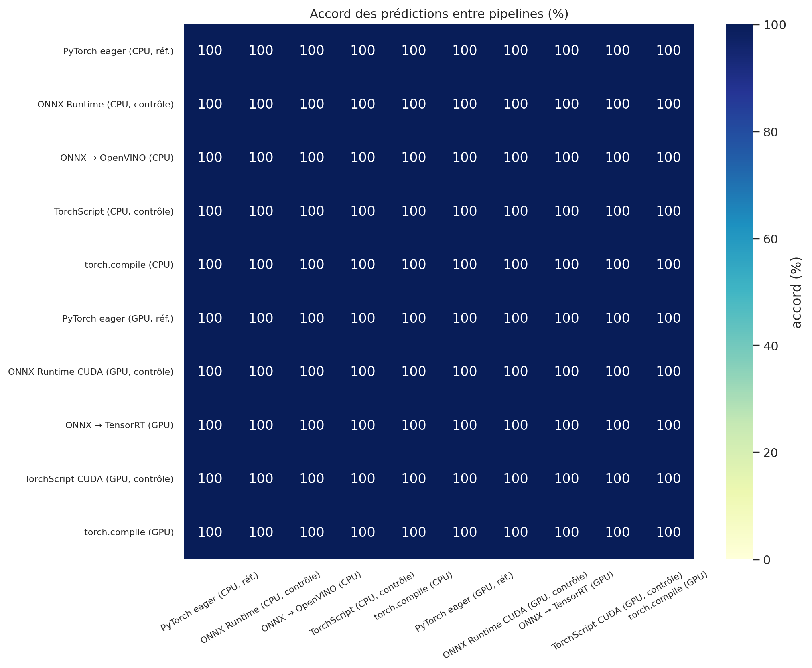
Côté CPU, l'énergie RAPL du package varie de 0.35 à 0.51 J/image selon le pipeline, soit environ 17.3 à 25.7 J pour les 50 images. Ces valeurs incluent tout le package CPU (et donc une partie du système), pas uniquement le modèle : elles servent à comparer les pipelines entre eux, pas à une facture électrique exacte. Côté GPU, l'énergie varie de 0.02 à 0.07 J/image, soit 0.8 à 3.6 J pour les 50 images. Elle est mesurée par intégration de la puissance NVML power.draw sur 3 séries de 20 passes : le compteur d'énergie total, trop grossier pour des runs de quelques dizaines de millisecondes, renvoyait parfois 0. La puissance au repos mesurée est d'environ 31.3 W ; l'énergie totale inclut cette composante. Le GPU est plus rapide mais sa puissance instantanée est beaucoup plus élevée ; le rapport énergie/temps est donc le bon indicateur pour arbitrer entre latence et coût énergétique.
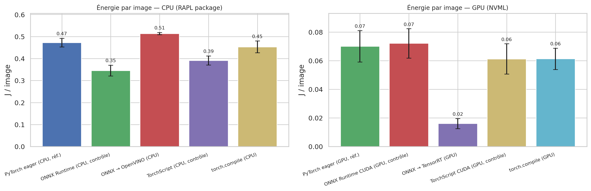
Le coefficient de variation du débit (σ/moyenne) reste modéré : de 0.31 % (torch.compile (GPU)) à 6.68 % (torch.compile (CPU)). Les mesures sont globalement stables et reproductibles ; les variations les plus fortes s'expliquent par la charge de fond de la station et par les temps de compilation/cache. Les répétitions individuelles sont détaillées en annexe ; les barres d'erreur des figures correspondent à l'écart-type des 5 exécutions indépendantes.
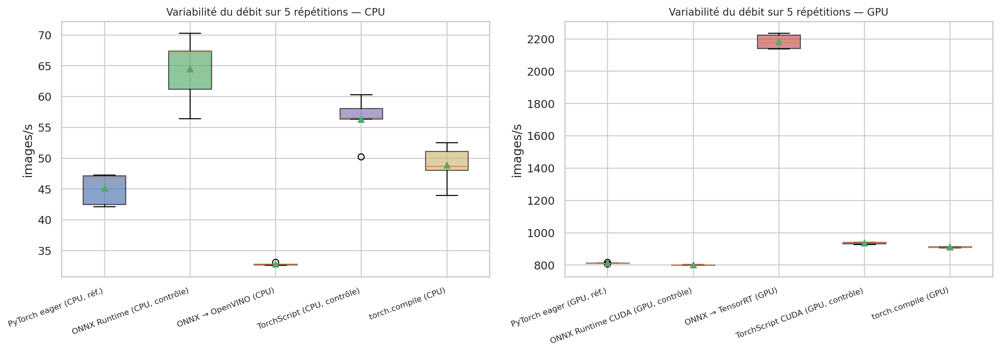
| Pipeline | Device | Débit (img/s) moy ± σ ; min–max | Latence (ms/img) moy ± σ ; min–max | Top-1 | Accord réf. |
|---|---|---|---|---|---|
| PyTorch eager (CPU, réf.) | CPU | 45.18 ± 2.61 42.16 – 47.25 | 22.196 ± 1.312 21.165 – 23.718 | 94.0 % | 100.0 % |
| ONNX Runtime (CPU, contrôle) | CPU | 64.49 ± 5.60 56.40 – 70.25 | 15.604 ± 1.419 14.235 – 17.732 | 94.0 % | 100.0 % |
| ONNX → OpenVINO (CPU) | CPU | 32.82 ± 0.18 32.63 – 33.11 | 30.474 ± 0.168 30.202 – 30.645 | 94.0 % | 100.0 % |
| TorchScript (CPU, contrôle) | CPU | 56.31 ± 3.76 50.20 – 60.31 | 17.826 ± 1.258 16.582 – 19.919 | 94.0 % | 100.0 % |
| torch.compile (CPU) | CPU | 48.87 ± 3.27 43.99 – 52.51 | 20.538 ± 1.418 19.044 – 22.730 | 94.0 % | 100.0 % |
| PyTorch eager (GPU, réf.) | CUDA | 810.71 ± 3.43 806.31 – 815.73 | 1.233 ± 0.005 1.226 – 1.240 | 94.0 % | 100.0 % |
| ONNX Runtime CUDA (GPU, contrôle) | CUDA | 800.10 ± 1.49 798.25 – 802.27 | 1.250 ± 0.002 1.246 – 1.253 | 94.0 % | 100.0 % |
| ONNX → TensorRT (GPU) | CUDA | 2182.71 ± 45.36 2138.62 – 2234.49 | 0.458 ± 0.009 0.448 – 0.468 | 94.0 % | 100.0 % |
| TorchScript CUDA (GPU, contrôle) | CUDA | 934.97 ± 6.15 926.54 – 940.73 | 1.070 ± 0.007 1.063 – 1.079 | 94.0 % | 100.0 % |
| torch.compile (GPU) | CUDA | 911.54 ± 2.86 907.48 – 914.61 | 1.097 ± 0.003 1.093 – 1.102 | 94.0 % | 100.0 % |
Pour le CPU, l'énergie provient du compteur RAPL du package sur chaque répétition.
Pour le GPU, le compteur NVML total étant trop grossier pour des runs de quelques
dizaines de millisecondes, l'énergie est obtenue en intégrant power.draw
sur 3 séries de 20 passes (soit 3 000 images par pipeline) ; la moyenne et l'écart-type
portent sur ces 3 mesures.
| Pipeline | Source | Énergie totale (J) moy ± σ | Énergie / image (J) moy ± σ | min – max |
|---|---|---|---|---|
| PyTorch eager (CPU, réf.) | CPU (RAPL package) | 23.6 ± 1.0 | 0.472 ± 0.020 | 0.456 – 0.495 |
| ONNX Runtime (CPU, contrôle) | CPU (RAPL package) | 17.3 ± 1.2 | 0.346 ± 0.024 | 0.321 – 0.381 |
| ONNX → OpenVINO (CPU) | CPU (RAPL package) | 25.7 ± 0.2 | 0.513 ± 0.005 | 0.506 – 0.519 |
| TorchScript (CPU, contrôle) | CPU (RAPL package) | 19.6 ± 1.0 | 0.391 ± 0.021 | 0.370 – 0.425 |
| torch.compile (CPU) | CPU (RAPL package) | 22.7 ± 1.3 | 0.453 ± 0.026 | 0.426 – 0.494 |
| PyTorch eager (GPU, réf.) | GPU (NVML power sampling) | 3.5 ± 0.5 | 0.070 ± 0.011 | 0.057 – 0.077 |
| ONNX Runtime CUDA (GPU, contrôle) | GPU (NVML power sampling) | 3.6 ± 0.5 | 0.072 ± 0.010 | 0.060 – 0.079 |
| ONNX → TensorRT (GPU) | GPU (NVML power sampling) | 0.8 ± 0.2 | 0.016 ± 0.004 | 0.013 – 0.020 |
| TorchScript CUDA (GPU, contrôle) | GPU (NVML power sampling) | 3.1 ± 0.5 | 0.061 ± 0.011 | 0.049 – 0.069 |
| torch.compile (GPU) | GPU (NVML power sampling) | 3.1 ± 0.4 | 0.061 ± 0.007 | 0.053 – 0.066 |
Les résultats montrent que le gain dépend fortement du pipeline et du matériel.
Sur CPU, ONNX Runtime et TorchScript dépassent PyTorch eager, tandis qu'OpenVINO
est plus lent dans nos conditions (4 threads, batch 10, station partagée) ;
torch.compile apporte un gain modeste. Sur GPU, TensorRT apporte le gain
le plus net (fusion d'opérateurs, kernels spécialisés, FP16), et
torch.compile un gain plus modeste via Triton. Dans tous les cas, le gain
dépend de la taille de batch, du modèle et du temps de compilation, qui est exclu
des mesures par les warmups.
Un pipeline plus rapide n'est pas nécessairement plus économe en énergie par image : le GPU consomme beaucoup plus de puissance instantanée que le CPU, mais il traite les images beaucoup plus vite. L'indicateur J/image permet de comparer ce compromis. Les valeurs CPU RAPL incluent l'ensemble du package et une partie du système ; elles servent surtout à comparer les pipelines CPU entre eux. Les valeurs GPU NVML sont plus directement attribuables au GPU.
Les optimisations de déploiement ne changent pas les poids du modèle. Elles peuvent modifier l'ordre des opérations, fusionner des couches ou passer en FP16, ce qui introduit de petites différences numériques. L'accord élevé des prédictions avec la référence montre que ces différences ne changent pas les décisions sur les 50 images. C'est le résultat attendu : un bon pipeline de déploiement doit préserver la qualité.
trtexec : le moteur et les optimisations sont bien ceux de TensorRT,
mais l'interface diffère légèrement d'un déploiement TensorRT « pur ».
Les quatre pipelines remplissent leur contrat : ils exécutent le même modèle sur les
mêmes 50 images, avec le même prétraitement et le même batch, et conservent la
qualité des prédictions. Les optimisations de déploiement apportent des gains de
débit et de latence, variables selon le matériel et le runtime. OpenVINO et
TensorRT illustrent l'approche « runtime externe spécialisé » ; TorchScript et
torch.compile illustrent l'approche « compilation intégrée à PyTorch ».
Le choix final dépend du matériel cible, du besoin de latence, du budget
énergétique et de la facilité d'intégration.
Au-delà des chiffres, ce TP montre qu'une mesure isolée ne suffit pas : il faut répéter, calculer moyenne et écart-type, vérifier la stabilité, comparer les prédictions et, lorsque c'est possible, mesurer l'énergie. C'est cette démarche expérimentale qui permet de conclure qu'un pipeline est réellement meilleur, et pas seulement plus rapide sur un unique essai.
deploiement-ia-tp/ ├── Dockerfile # image unique CPU + GPU (PyTorch, ONNX, OpenVINO, TensorRT) ├── docker-compose.yml # service "tp", GPU, RAPL, cache, UID hôte ├── Makefile # build / prepare / notebooks / report ├── artifacts/ # 50 images, tête linéaire, métadonnées ├── notebooks/ # 00 référence + 4 pipelines ├── src/ # common.py, prepare.py, make_plots.py, make_report.py ├── results/ # JSON, CSV, logits ├── report/ # rapport.html, rapport.pdf, figures/, screenshots/ ├── scripts/ # génération des notebooks, exécution └── README.md
# Construction de l'image docker compose build # Préparation des données + entraînement du linear probe docker compose run --rm tp python -m src.prepare # Exécution des cinq notebooks (référence + 4 pipelines) docker compose run --rm tp bash scripts/execute_notebooks.sh # Figures + rapport HTML docker compose run --rm tp python -m src.make_plots docker compose run --rm tp python -m src.make_report
Le conteneur démarre en root uniquement pour ouvrir les compteurs RAPL, puis
abandonne les privilèges vers l'UID 1000 avant d'exécuter les commandes : les
fichiers du dépôt restent possédés par l'utilisateur hôte. Le flag
privileged: true sert uniquement à exposer /sys/class/powercap ;
on peut le retirer (et désactiver l'énergie CPU) sans affecter les benchmarks.
Les notebooks sont compatibles Colab. Il suffit de cloner le dépôt, d'ouvrir le
notebook voulu et d'exécuter les cellules dans l'ordre. Pour les notebooks 03 et 04,
sélectionner un runtime GPU. La cellule de setup installe les dépendances si
nécessaire et clone le dépôt lorsque TP_REPO_URL est défini :
import os os.environ["TP_REPO_URL"] = "https://github.com/THEGENTLEMAN31/deploiement-ia-tp.git" # puis exécuter la cellule de setup du notebook
Les captures ci-dessous proviennent des notebooks réellement exécutés dans le conteneur. Elles montrent les paramètres, les tableaux de mesures et les figures générées.
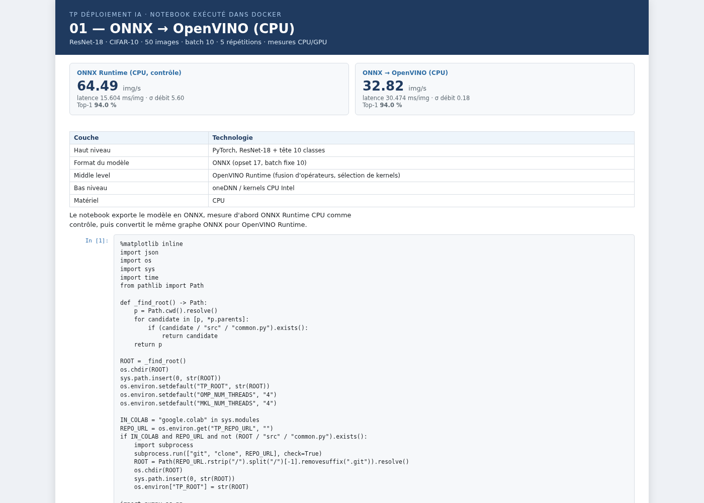
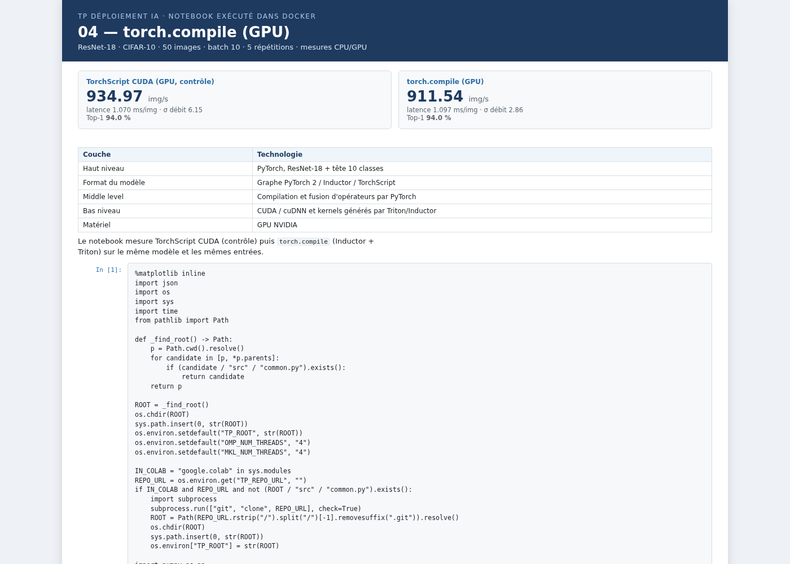
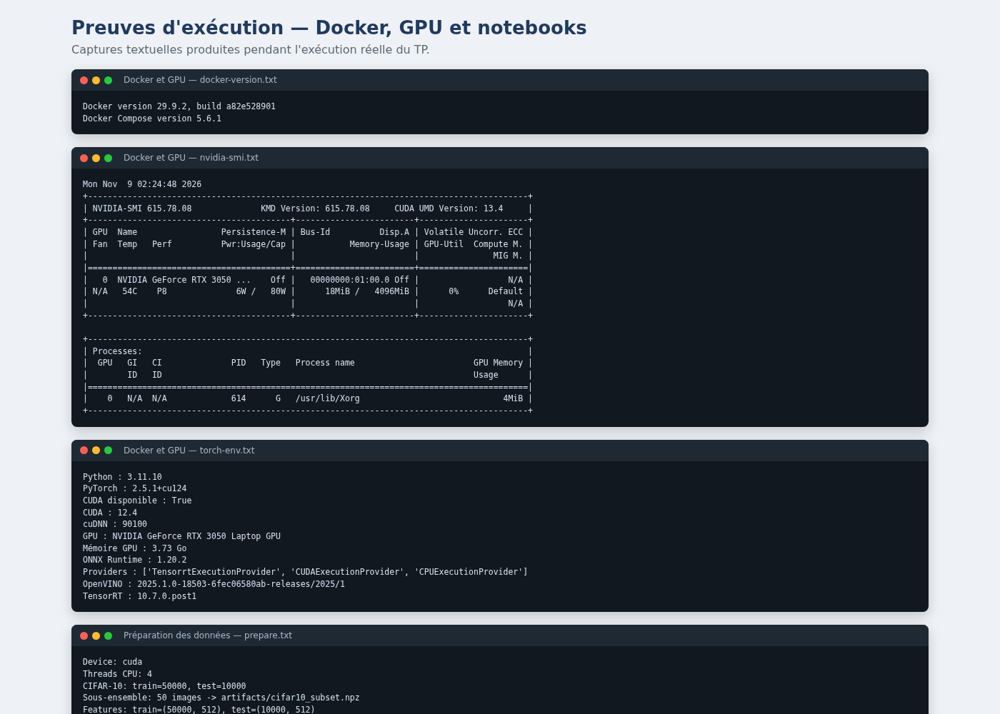
| Pipeline | Rép. | Débit (img/s) | Latence (ms/img) | Énergie/img (J) | Temps total (s) |
|---|---|---|---|---|---|
| ONNX → OpenVINO (CPU) | 1 | 32.79 | 30.493 | 0.513 | 1.5246 |
| ONNX → OpenVINO (CPU) | 2 | 33.11 | 30.202 | 0.506 | 1.5101 |
| ONNX → OpenVINO (CPU) | 3 | 32.83 | 30.461 | 0.513 | 1.5231 |
| ONNX → OpenVINO (CPU) | 4 | 32.71 | 30.571 | 0.517 | 1.5286 |
| ONNX → OpenVINO (CPU) | 5 | 32.63 | 30.645 | 0.519 | 1.5322 |
| torch.compile (CPU) | 1 | 51.09 | 19.572 | 0.434 | 0.9786 |
| torch.compile (CPU) | 2 | 43.99 | 22.730 | 0.494 | 1.1365 |
| torch.compile (CPU) | 3 | 52.51 | 19.044 | 0.426 | 0.9522 |
| torch.compile (CPU) | 4 | 48.71 | 20.528 | 0.457 | 1.0264 |
| torch.compile (CPU) | 5 | 48.05 | 20.814 | 0.456 | 1.0407 |
| ONNX → TensorRT (GPU) | 1 | 2175.83 | 0.460 | 0.016 | 0.0230 |
| ONNX → TensorRT (GPU) | 2 | 2140.15 | 0.467 | 0.016 | 0.0234 |
| ONNX → TensorRT (GPU) | 3 | 2138.62 | 0.468 | 0.016 | 0.0234 |
| ONNX → TensorRT (GPU) | 4 | 2234.49 | 0.448 | 0.016 | 0.0224 |
| ONNX → TensorRT (GPU) | 5 | 2224.49 | 0.450 | 0.016 | 0.0225 |
| torch.compile (GPU) | 1 | 913.50 | 1.095 | 0.061 | 0.0547 |
| torch.compile (GPU) | 2 | 909.96 | 1.099 | 0.061 | 0.0549 |
| torch.compile (GPU) | 3 | 914.61 | 1.093 | 0.061 | 0.0547 |
| torch.compile (GPU) | 4 | 907.48 | 1.102 | 0.061 | 0.0551 |
| torch.compile (GPU) | 5 | 912.14 | 1.096 | 0.061 | 0.0548 |
| Clé | Valeur |
|---|---|
| timestamp_utc | 2026-11-09T02:14:42.076752+00:00 |
| python | 3.11.10 |
| platform | Linux-7.2.11-arch1-1-x86_64-with-glibc2.35 |
| cpu | Intel(R) Core(TM) i5-10200H CPU @ 2.40GHz |
| cpu_logical_cores | 8 |
| cpu_threads_used | 4 |
| torch | 2.5.1+cu124 |
| cuda_available | True |
| cuda_version | 12.4 |
| cudnn_version | 90100 |
| batch_size | 10 |
| repetitions | 5 |
| warmup | 5 |
| n_images | 50 |
| torchvision | 0.20.1+cu124 |
| onnx | 1.17.0 |
| onnxruntime | 1.20.2 |
| onnxruntime_providers | ['TensorrtExecutionProvider', 'CUDAExecutionProvider', 'CPUExecutionProvider'] |
| openvino | 2025.1.0-18503-6fec06580ab-releases/2025/1 |
| tensorrt | 10.7.0.post1 |
| gpu | NVIDIA GeForce RTX 3050 Laptop GPU |
| gpu_memory_mb | 4096.0 |
| nvidia_driver | 615.78.08 |
results/*.json : mesures, résumés, accuracy, matrice de confusion.results/*_logits.npy : logits par pipeline, pour l'accord des prédictions.results/summary.csv et results/summary_table.csv : tableaux de synthèse.report/figures/*.png : figures du rapport.report/rapport.html et report/rapport.pdf : ce document.notebooks/*.ipynb : notebooks exécutés avec sorties.Rapport généré automatiquement à partir des résultats du dépôt. Les valeurs sont arrondies ; les JSON et CSV conservent la précision complète. Les figures et tableaux sont reproductibles via les commandes de la section 8.